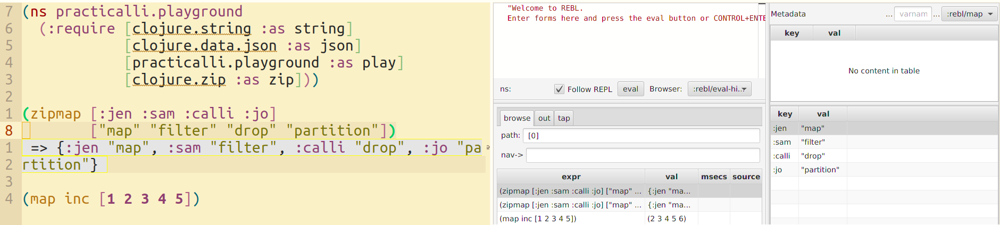

Cognitect REBL data browser
Cognitect REBL is a interactive tool for capturing the results of evaluating expressions and visualizing that data for human consumption. REBL was initially created to support development with the Datomic database and is useful viewing and navigating data structures, especially nested data structures and large data sets.

Install REBL
REBL is part of the Cognitect dev-tools project that also includes Datomic dev-local (local running instance of Datomic).
The Cognitect install script requires maven to be installed locally
Visit the Cognitect dev-tools web page and provide an email address. An email will be sent containing a link to download the latest version of Cognitect dev-tools (0.9.34 at time of writing).
Click the link in the email to download the .zip file and extract the .zip file.
In a terminal, run the install file (assuming maven is installed)
./install
Create an alias for Cognitect REBL
A :cognitect-rebl alias is included in practicalli/clojure-deps-edn configuration
Add an alias called :cognitect-rebl to ~/.clojure/deps.edn or a deps.edn file in the root of a specific project
If using Java11 for your projects then JavaFX library dependencies need to be explicitly added (JavaFX was separated from the Java distribution from Java 9 onwards).
:cognitect-rebl
{:extra-deps {com.cognitect/rebl {:mvn/version "0.9.241"}
org.clojure/core.async {:mvn/version "1.3.610"}
org.openjfx/javafx-fxml {:mvn/version "11.0.1"}
org.openjfx/javafx-controls {:mvn/version "11.0.1"}
org.openjfx/javafx-swing {:mvn/version "11.0.1"}
org.openjfx/javafx-base {:mvn/version "11.0.1"}
org.openjfx/javafx-web {:mvn/version "11.0.1"}}
:main-opts ["-m" "cognitect.rebl"]}Java8 contains JavaFX, so only the REBL library dependencies is required.
:cognitect-rebl-java8
{:extra-deps {com.cognitect/rebl {:mvn/version "0.9.241"}}
:main-opts ["-m" "cognitect.rebl"]}Running REBL with a project
Run the project using the Clojure CLI tools
clojure -A:cognitect-rebl
If rlwrap is installed, then use:
clj -A:cognitect-rebl
Configure REBL with CIDER for Spacemacs / Emacs
nrebl.middleware is an nREPL middleware library that will spy on an nREPL connection and sent the results of every evaluation to Cognitect REBL.

This library is described as very alpha but works in basic tests run by Practicalli.
An :nrebl alias along with the supporting :nrepl :cider-nrepl aliases are included in practicalli/clojure-deps-edn configuration
Add an alias called :nrebl to ~/.clojure/deps.edn or a deps.edn file in the root of a specific project
:nrebl
{:extra-deps {nrepl/nrepl {:mvn/version "0.7.0"}
cider/cider-nrepl {:mvn/version "0.25.0"}
refactor-nrepl/refactor-nrepl {:mvn/version "2.5.0"}
rickmoynihan/nrebl.middleware {:mvn/version "0.3.1"}}
:main-opts ["-e" "((requiring-resolve,'cognitect.rebl/ui))"
"-m" "nrepl.cmdline"
"-i"
"--middleware" "[nrebl.middleware/wrap-nrebl,cider.nrepl/cider-middleware]"]}Supporting aliases for nrebl.middleware
:nrepl
{:extra-deps {nrepl/nrepl {:mvn/version "0.7.0"}}}
:cider-nrepl
{:extra-deps {cider/cider-nrepl {:mvn/version "0.25.0"}
refactor-nrepl/refactor-nrepl {:mvn/version "2.5.0"}}}Run REBL for nREPL based editors
CIDER and Calva use the nREPL protocol to connect to the REBL REPL and have all the evaluated code in those editors automatically display the results in the REBL UI.
In a terminal, run REBL listening to nREPL using the command
clojure -R:nrepl:cider-nrepl:cognitect-rebl -A:nrebl
Then cider-connect-clj in Spacemacs / Emacs and CIDER will connect to the nREPL port and results of evaluated code are sent to REBL UI.
To start a REBL REPL from cider-jack-in-clj add a .dir-locals.el file to the root of a Clojure project. The .dir-locals.el configuration adds the nREBL aliases set via cider-clojure-cli-global-options and all other automatically injected configuration is disabled (to prevent those dependencies over-riding the nREBL aliases).
((clojure-mode . ((cider-preferred-build-tool . clojure-cli)
(cider-clojure-cli-global-options . "-R:nrepl:cider-nrepl:cognitect-rebl -A:nrebl")
(cider-jack-in-dependencies . nil)
(cider-jack-in-nrepl-middlewares . nil)
(cider-jack-in-lein-plugins . nil)
(cider-clojure-cli-parameters . ""))))See the excellent guide on using VSCode Calva with REBL